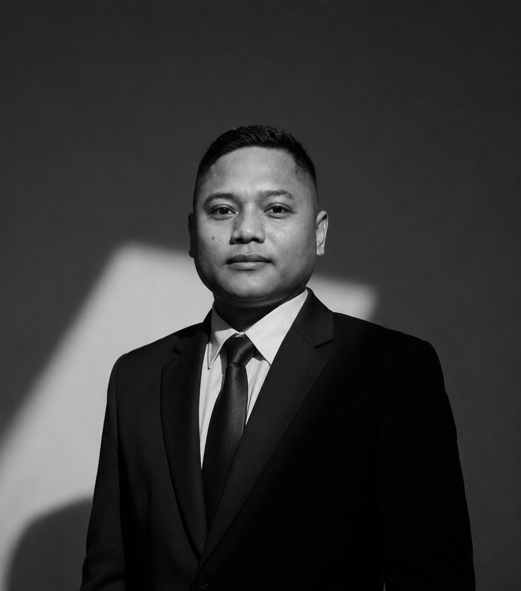

Routing & Switching
01LAN, VLAN, routing, konfigurasi perangkat, dan topologi.
Saya Ahmad Zikrulloh, S.Kom. — pendidik Teknik Jaringan Komputer dan Telekomunikasi. Saya membawa konsep teknis ke ruang praktik, lalu mengubah proses belajar menjadi pengalaman memecahkan masalah nyata.

Saya berfokus pada pembelajaran jaringan komputer, administrasi sistem, dan Internet of Things. Materi disusun agar peserta didik tidak berhenti pada hafalan istilah, tetapi mampu membaca kebutuhan, merancang solusi, menguji, dan menjelaskan hasil kerjanya.
Di kelas, pendekatan praktik dan Project-Based Learning digunakan untuk menghubungkan kompetensi teknis dengan pola kerja yang dibutuhkan di dunia nyata.
Area teknis dan pedagogis yang menjadi bagian dari kegiatan mengajar, praktik laboratorium, serta pengembangan media pembelajaran.
LAN, VLAN, routing, konfigurasi perangkat, dan topologi.
Topologi, IP addressing, kebutuhan perangkat, dokumentasi.
Diagnosis konektivitas, pengujian, dan perbaikan gangguan.
Layanan server, DHCP, DNS, web server, dan sistem operasi.
ESP8266/ESP32, sensor, monitoring, dan prototipe.
Modul ajar, asesmen praktik, media digital, dan PjBL.
Setiap karya dilihat dari masalah yang ingin diselesaikan, pendekatan teknis, dan hasil yang dapat diuji — bukan sekadar daftar teknologi.
Membangun pemisahan jaringan Guru, Siswa, dan Tata Usaha agar lalu lintas lebih terstruktur dan mudah dikelola.
Baca studi kasus↗Prototipe papan informasi digital dengan mikrokontroler, tampilan LCD, dan halaman web lokal untuk memperbarui pesan.
Baca studi kasus↗Pengembangan sistem pembacaan suhu menggunakan sensor dan mikrokontroler untuk mengenalkan akuisisi data secara langsung.
Baca studi kasus↗Eksplorasi aplikasi ujian responsif dengan pengelolaan data siswa, jadwal mapel, akses soal, dan pengalaman penggunaan mobile.
Baca studi kasus↗Skenario gangguan dirancang agar siswa menganalisis gejala, menguji hipotesis, menemukan akar masalah, dan mendokumentasikan solusi.
Baca studi kasus↗Antarmuka terpusat untuk menyajikan jadwal, agenda kelas, materi, dan informasi pembelajaran dengan tampilan desktop maupun mobile.
Baca studi kasus↗Alur pembelajaran yang memberi ruang bagi siswa untuk berpikir, mencoba, menguji, dan mempertanggungjawabkan hasil.
Mengidentifikasi kebutuhan, membaca gejala, memahami konsep, dan menentukan tujuan kerja.
Menyusun solusi, membangun simulasi atau prototipe, melakukan konfigurasi, dan pengujian.
Menganalisis hasil, memperbaiki kesalahan, mendokumentasikan proses, dan mempresentasikan solusi.
Terbuka untuk diskusi TJKT, pengembangan media belajar, dan projek teknologi pendidikan.